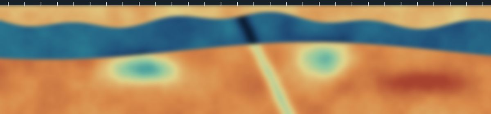
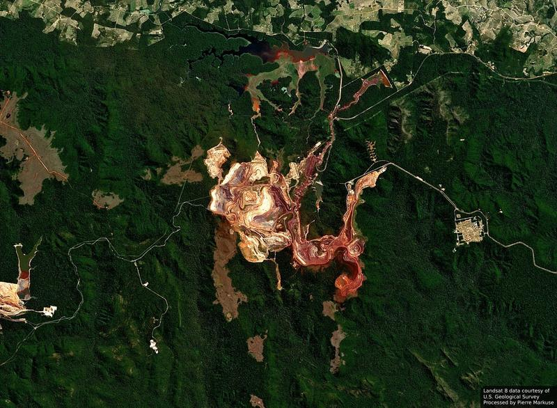
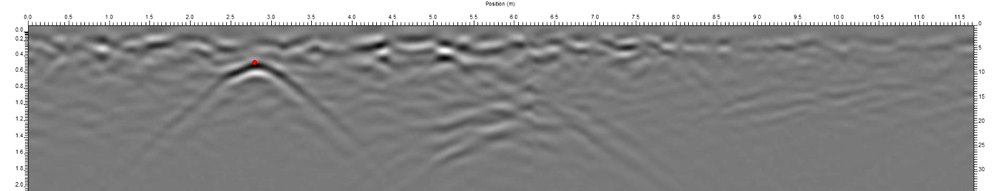
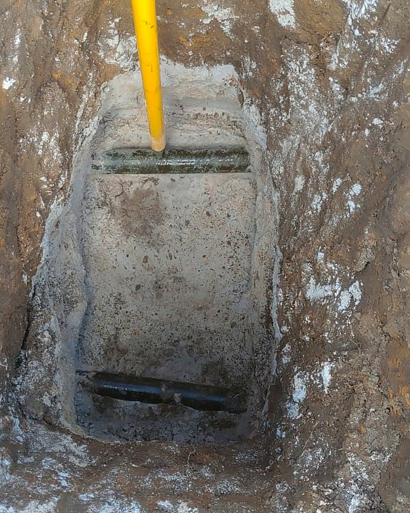

Electrical resistivity
Illustrative example
Electrical response varies with pore water, dissolved salts and ground composition. A conductive zone alone does not confirm a productive aquifer.
Geophysical surveys
Subsurface investigation on the ground and by drone, from planning to report, for teams deciding where to drill, mine or build in the Amazon.
Request a proposal
Different methods investigate different physical properties. Explore simplified examples of possible applications and limitations.
Illustrative example
Electrical response varies with pore water, dissolved salts and ground composition. A conductive zone alone does not confirm a productive aquifer.
Illustrative example
Magnetics investigates magnetic contrasts in rocks and other materials; it does not directly measure groundwater.
Illustrative example
Radiometrics provides information about near-surface materials, not a direct identification of water at depth.
Illustrative example
The water table may produce a reflection under favourable conditions. Conductivity, material and survey configuration constrain the investigation.
Conceptual examples, not predictions of detection or performance. Method selection depends on the target, depth, ground conditions and contrasts between materials.
| Method | Measures | Depth of investigation | Platform | Good for |
|---|---|---|---|---|
| Electrical resistivity | Electrical resistivity of the subsurface | Depends on array geometry, ground conditions and data quality | Ground | Groundwater, contamination, foundations, shallow geology |
| Magnetics | Magnetic field intensity | Depends on source geometry, depth and magnetisation | Ground or drone | Iron ore, dykes, faults, structures |
| Gamma-ray spectrometry | Natural K, eTh and eU radiation | Surface, about 30 cm | Drone | Rock and soil mapping, hydrothermal alteration |
| GPR (ground-penetrating radar) | Radar wave reflections at subsurface contrasts | Variable; conductive ground may limit penetration | Ground | Buried utilities and structures, foundations, shallow layers, water table in sandy soils |

Planning. The project question sets the method, line spacing and access before the crew mobilises.

Acquisition. Ground or drone acquisition planned for the project, with field data quality checks.

Processing. Corrections, filtering and inversion to estimate models consistent with the measurements, with quality and limitation assessment.

Interpretation. Interpretation alongside geology and available information, with hypotheses and limitations.

Axys is a new company; the people who run the surveys are not new to them. Team roles and technical responsibility are defined for each engagement.


From radargram to excavation
GPR section with a 250 MHz antenna. The hyperbola marked in red indicates a pipe at about 0.5 m depth, 2.8 m along the line. The verification trench exposed the pipes.
Data and photo from earlier work by one of the partners (2023), before Axys was founded. Processing: dewow, SEC2 gain and background removal.
Meet the partners (in Portuguese)Experience gained by the professionals before Axys was founded, presented as individual experience.
The technical and legal references behind our planning, fieldwork and reports.
ABNT NBR 15935
Brazilian standard for geophysical methods in environmental investigations.
ASTM D6431
Standard guide for the DC resistivity method in subsurface site characterisation.
ASTM D6429
Standard guide for selecting surface geophysical methods.
ASTM D6432
Standard guide for using surface ground-penetrating radar (GPR) for subsurface investigation.
CONAMA Resolution 420/2009
Brazilian rules for contaminated sites, where geophysics supports the investigation.
Which standards apply depends on the project and is set out in the proposal.
It depends on the method, line length, access and logistics. Once we understand the area and the project question, we prepare a proposal with scope, estimated schedule and commercial terms.
Timing is estimated after evaluating survey extent, access and method. The proposal distinguishes fieldwork, processing and reporting.
Investigation depth and resolution depend on method, ground conditions and survey design. They are assessed during planning and discussed alongside data limitations.
Mobilisation feasibility is assessed against location, access and field conditions. Drone use depends on method and operating conditions.
A technical report with method, data quality, maps, sections, interpretation and recommendations, plus raw and processed data in open formats.
Drone planning considers applicable ANAC and DECEA requirements and access conditions. Responsibilities for authorisations are defined before mobilisation.
Tell us what you need to investigate and where. We assess the enquiry to discuss investigation scope.